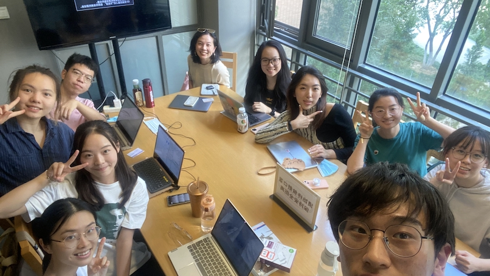

Political Science Research Lab
Research with computational methods.

Principal Investigator
Xinru Ma
Email: xinruma@bfsu.edu.cn Visit my website.
Xinru Ma is an assistant professor in the School of International Relations and Diplomacy at the Beijing Foreign Studies University in China. Originally from China, Xinru's research and teaching focus on nationalism, great power politics, and East Asian security with a methodological focus on big data and formal methods. Her research is informed by extensive field research in Vietnam, the Philippines, Japan, and China. More broadly, Xinru is interested in public opinion and new methods of measuring it, foreign policy formation, alliance politics, and the historical relations of East Asia. Her work has appeared or is forthcoming in The Washington Quarterly, the Journal of Global Security Studies, and the Journal of European Public Policy, and in edited volumes through Palgrave. She is also the leading author of the latest manuscript Asian Power Transitions (Columbia University Press). She is currently working on a book project that uses formal methods to explore the mechanisms through which nationalist protests influence international crisis bargaining.
Previously, Xinru was a post-doctoral fellow at the Center for International Security and Cooperation at Stanford University (2019-2020), and a pre-doctoral fellow at the Department of Political Science at Vanderbilt University (2018-2019). She obtained her Ph.D. in Political Science and International Relations at the University of Southern California in August 2019.
Lab Members
Zhaorui Li （李朝瑞)
Email: 20161039@bfsu.edu.cn
李朝瑞是北京外国语大学国际关系学院的硕士研究生。主要研究兴趣为政党政治与定量研究方法。她自入学开始便参与了多项科研项目和研究课题，包括由导师承担的国家社科基金重大项目、青年项目以及教育部人文社科一般项目，主持2022年中央高校基本科研业务费项目等，并多次参与由北京大学国情研究中心、清华大学数据治理研究中心以及中国社会科学院等单位组织的课题和调研项目。目前担任政治学研究方法（Research Methods for Political Science）的课程助教。